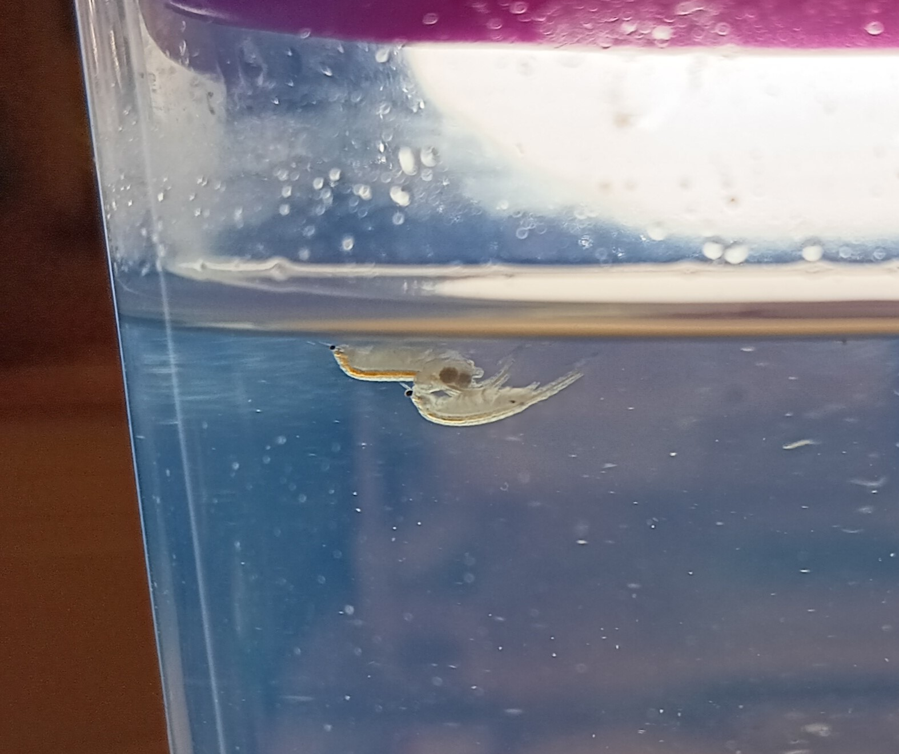

Valentine's Day in the Tank!
February 14, 2025
Hello!
I just learned about Valentine's Day from the Big Thing (He was telling the Small Thing about it). What a neat mating ritual! Certainly seems a little odd to me, though. I mean, the idea that you have to plan big meetings? Or give gifts? Or create artistic expressions of love? Or even talk to each other?
Gosh, that's quite a lot to worry about! And you don't even know if you'll mate by the end. Talk about risky!
For sea monkeys, mating is a little different. It's very minimal. We just swim around together for a while! It doesn't matter for how long; it can be anywhere from a few hours to a few days. But there's nothing special to it! No heartfelt displays or anything like that Big Thing stuff. The male sea monkey just latches on to the underside of the female sea monkey using his head antennae, and that's it:

There's a nice simplicity to it. But then again, my whole world is only a few cubic inches, so I might be biased.
By the way, that's me directly underneath the couple, with the red food-line! Look at how much I've grown in just a couple weeks! I've got all my legs and all 3 eyes. I still don't know if I'm a boy or a girl yet, though...
Oh! I guess this is a good time to talk about the difference between a male and a female sea monkey.
So, a male sea monkey, like Water Bottle, will have these big antennae on the top of his head. They almost look like flat horns that swoop backwards. And a female sea monkey will have an egg sac on either side of her midsection. That's the part that the male sea monkey latches onto. Also, the females tend to be a little pinker, and the males tend to be a little more transparent. You can see it all a lot better in this picture:
Also, do you see that little black spot on the back of the male? That's not a good thing to see. We call that the wasting disease. Every once in a while we get some of it on ourselves. If it's a small amount, and it's in a non-vital place, we can usually shed it off when we molt. But if it goes anywhere important like our gut or the base of our legs, it just grows and grows on us until we die.
It's gotten a couple of us in here; that's how my mom died! And it's usually a sign that the water quality is off because of overfeeding, lack of oxygen, or bacteria. That's why the Big Thing has all these cool contraptions for our tank now! And thankfully, the wasting disease is not contagious! And that guy in the picture healed up quickly.
He has no name.